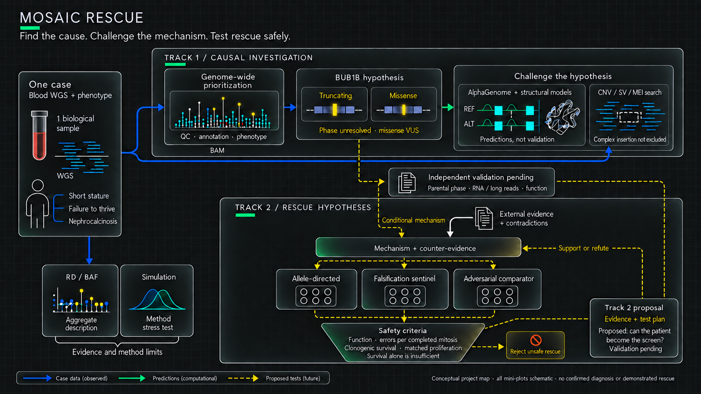
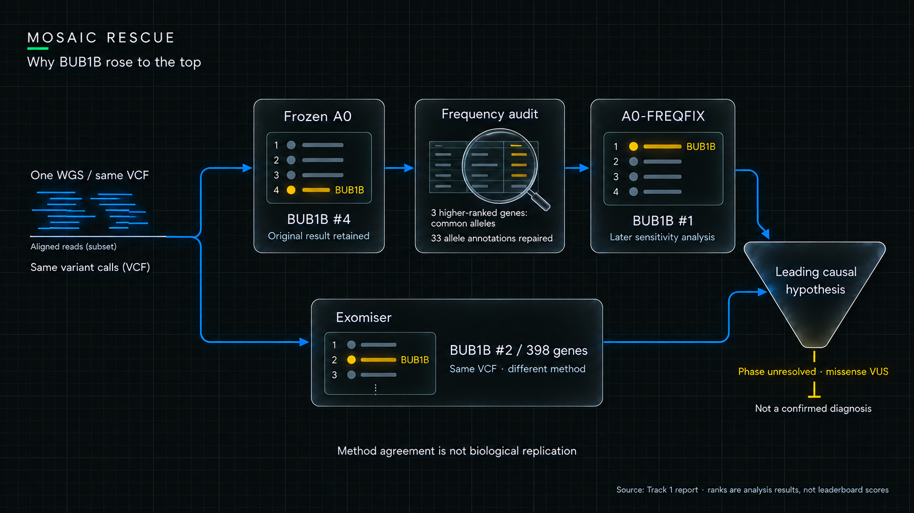
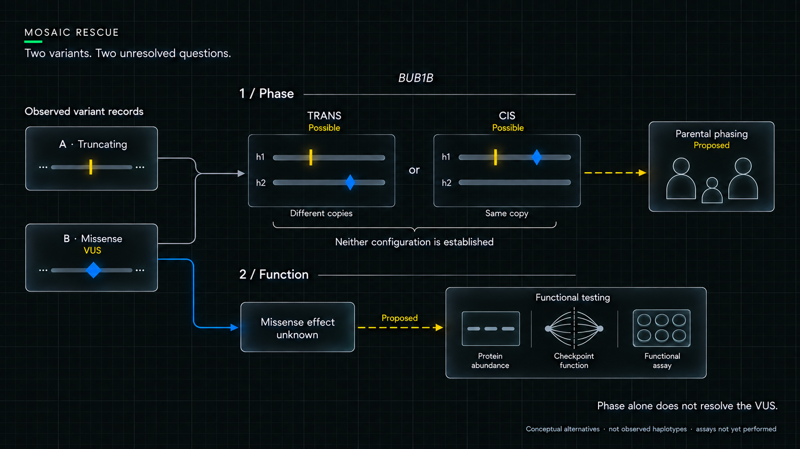
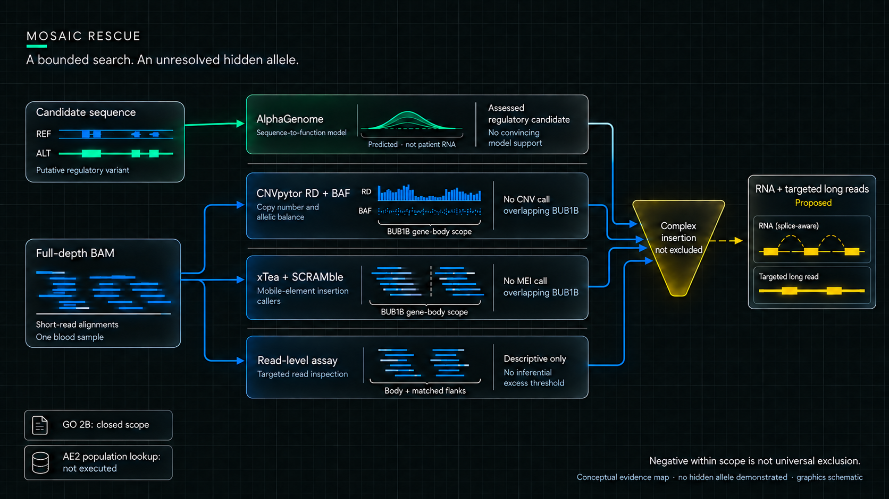
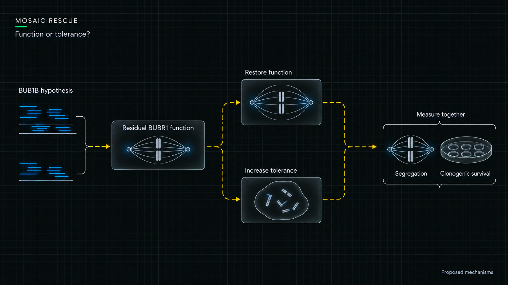
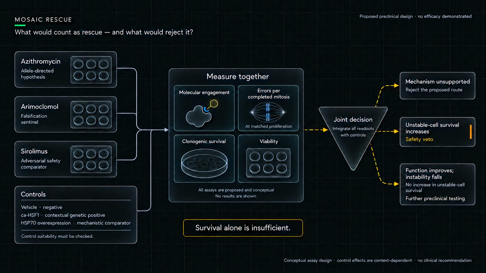
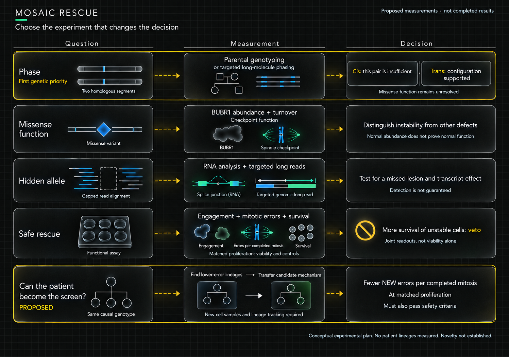

Encontrar un candidato. Aprender a ponerlo a prueba.
Un genoma de sangre. Una hipótesis causal. Y una pregunta incómoda: ¿un aparente rescate corregiría el defecto o ayudaría a sobrevivir a células inestables?
Análisis computacional documentadoValidación biológica pendienteEntrega en preparación

Mapa principal · Datos, predicciones y pruebas propuestas se distinguen. La simulación evalúa métodos, no constituye una medición del paciente. La validación independiente está pendiente. El resultado es priorizar el siguiente experimento con criterios explícitos de rechazo por seguridad. Todas las minigráficas son esquemáticas; no hay rescate demostrado.
Esta lectura reúne resultados existentes. Distingue datos, predicciones, simulaciones y propuestas. Los controles permiten comparar vistas; no ejecutan análisis nuevos.
Resultados y entregables
Qué produjo cada track.
Track 1 · Hipótesis causal
BUB1B: A0 congelado #4; sensibilidad A0-FREQFIX #1; Exomiser #2 de 398 genes con el mismo VCF. Alelo truncante: Likely Pathogenic de investigación; missense: VUS; fase pendiente. La búsqueda estructural acotada no apoyó CNV RD+BAF ni MEI superpuestas al gen, pero no excluye una inserción compleja. No es un diagnóstico confirmado.
Azitromicina: hipótesis dirigida al alelo. Arimoclomol: centinela de falsificación. Sirolimus: comparador adversarial de seguridad. La matriz conserva 61 de 80 celdas vacías en una búsqueda acotada. No hay ganador terapéutico ni rescate demostrado. La supervivencia de células inestables puede vetar un aparente beneficio.
Figura 1 · Flujo causal. Las señales REF/ALT son esquemáticas; no representan resultados cuantitativos. El ensayo está propuesto. Este esquema desarrolla Track 1, no todo el proyecto.
01 · Buscar antes de elegir
El ranking también tenía que sobrevivir a una auditoría.
BUB1B quedó cuarto en el ranking A0 congelado. Una revisión detectó anotaciones de frecuencia ausentes en tres competidores; la sensibilidad posterior A0-FREQFIX lo situó primero. Conservar ambos resultados hace visible por qué cambió nuestra interpretación.

Figura 3 · Resultados de ranking verificados; glifos esquemáticos. La sensibilidad posterior no reescribe A0. Otra metodología no constituye réplica biológica. La gráfica cuantitativa original sigue debajo.
Datos derivadosLa figura corresponde al ranking original. Su eje es puntuación de priorización, no significación estadística. La comparación con A0-FREQFIX está en el notebook 01.

Figura 2 · Fase y función. Ninguna configuración está establecida. Los símbolos de los ensayos representan pruebas propuestas, no resultados.
Decisión: investigar BUB1B. Dos alelos candidatos aún no establecen una causa bialélica: falta fase y la missense permanece VUS.
02 · Preguntar qué podría cambiar
Una predicción se entiende mejor cuando se puede comparar.
El candidato regulador se interrogó con varias lecturas congeladas. Examina la sensibilidad local, la organización de contactos y las pistas alineadas. Son distintas vistas del modelo, no mediciones de tejidos del paciente.
Predicción512 × 512 bins. La diferencia máxima equivale a aproximadamente 1,09 % del máximo REF, bajo el umbral congelado del 5 %. No son datos Hi-C del paciente.
PredicciónLa similitud REF/ALT delimita la hipótesis evaluada. No descarta globalmente alteraciones de splicing en el niño.
Decisión: estas salidas no aportan apoyo convincente al candidato regulador evaluado. No elevan la missense a patogénica. La calibración EXP-024 permanece no ejecutada.
Alcance de la búsqueda estructural
No detectarlo no equivale a excluirlo.

Figura 4 · Las métricas de lecturas son descriptivas; no se definió un umbral inferencial de exceso. La inserción compleja sigue abierta. AE2 no se ejecutó. Las minigráficas son esquemáticas.
El WGS permite describir profundidad y balance alélico agregados. La simulación permite estudiar mecanismos de cancelación y confusión. Sus conclusiones no son intercambiables.
SimulaciónLa auditoría falsificó la explicación inicial del estadístico absoluto: su caída dependía de profundidad. La cancelación afecta al estadístico con signo. La ablación explicativa fue post-hoc; no se ha demostrado superioridad frente a MoChA.
Simulación · post-hocEl color distingue dirección; la línea y el marcador distinguen profundidad. Comparar ambos factores permite revisar la explicación inicial. Se dibuja la salida existente de EXP-015c, sin nueva simulación ni datos del paciente.
Decisión: conservar el hallazgo metodológico con su corrección. Validar un detector exige controles compatibles y comparación con un método faseado.
Del candidato al mecanismo
Restaurar función o aumentar tolerancia.

Figura 8 · Son hipótesis, no resultados observados. Las variantes podrían alterar la función residual de BUBR1. Mejorar la supervivencia de células inestables no demuestra un rescate seguro. Los símbolos no representan estructuras moleculares ni ensayos reales. Los controles y lecturas adicionales se desarrollan en la sección siguiente.
04 · Separar plausibilidad de demostración
La evidencia de rescate tiene huecos. Mostrarlos es parte del resultado.
Los ocho puentes conectan la hipótesis con evidencia externa y requisitos de seguridad. Las celdas vacías son vacíos de la búsqueda acotada; no prueban ausencia universal de estudios.
Evidencia curada61 de 80 celdas vacías en el dossier. Sin puntuación total de eficacia. Tabla fuente.

Figura 5 · Diseño propuesto. No muestra eficacia, colonias medidas ni resultados de ensayos. ca-HSF1 es un control genético contextual; su idoneidad debe verificarse. Portafolio y controles con evidencia.
Si sobreviven más células, ¿se corrigió su función o aumentó la tolerancia a la inestabilidad?
El ensayo propuesto debe leer actividad molecular, segregación cromosómica y supervivencia clonogénica junto a viabilidad. Un resultado atractivo en una lectura puede fracasar en otra.
05 · La siguiente decisión
La figura que falta necesita un experimento.
La fase cambia la interpretación del par de alelos. Los ensayos funcionales cambian la interpretación de la missense. RNA y lecturas largas podrían resolver una lesión oculta. El ensayo de rescate debe incorporar su propio veto de seguridad.

Síntesis · propuestaEste mapa no representa experimentos completados.
Figura 7 · Datos del caso y predicciones informan la hipótesis causal. La simulación independiente delimita el método; la evidencia externa y los criterios de seguridad informan propuestas de rescate. La salida es un experimento propuesto, no una terapia demostrada. Herramientas y resultados detallados permanecen en la tabla del README. Pies de figura y fuentes.